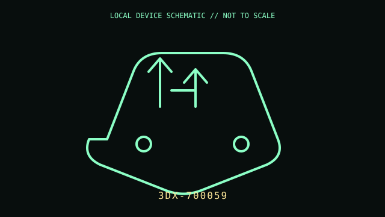

[ MICE AND TRACKBALLS // IDENTIFIED COMPONENT ]
3Dconnexion SpaceMouse Compact
Six-degree-of-freedom controller for manipulating 3D views alongside a conventional mouse.

MODEL IDENTIFICATION: Manufacturer identity: 3DX-700059. Compare the unit label, regional suffix, and revision against the manufacturer's manual before repair or compatibility claims.
Model specifications
| Catalog subcategory | Mice and trackballs |
|---|---|
| Exact model / ID | 3DX-700059 |
| Model-specific features | Patented 6DoF sensor; two programmable buttons; 77 × 77 × 54 mm, 480 g; USB connection; brushed-steel base. |
| Interface and host support | USB connection requires 3DxWare 10 for radial menus and application-specific 3D navigation. Behavior depends on supported CAD software, driver version, and OS. |
| Revision / driver caveat | Confirm 3DX-700059 from the base label; 3Dconnexion SpaceMouse product generations are not interchangeable by name alone. Check the vendor supported-OS list before installing legacy drivers. |
Preservation and service notes
Keep the controller cap free of dust and avoid levering it sideways. Do not open the weighted base unless necessary; preserve its USB cable and record 3DxWare version with any workflow capture.
Record the as-found label, accessories, host OS, driver/firmware version, and test method. Separate observed condition from published specifications; do not treat family-level feature claims as proof of a unit's revision.
Primary manufacturer documentation
- 3Dconnexion SpaceMouse Compact — product and technical specificationsManufacturer page documents six-axis sensing, two buttons, size, weight, OS support, and manual.
- 3Dconnexion SpaceMouse Compact manualManufacturer manual for installation, button assignment, and operation.
Manufacturer pages may change or retire. Preserve a copy of the applicable manual and note its revision when documenting a physical unit.